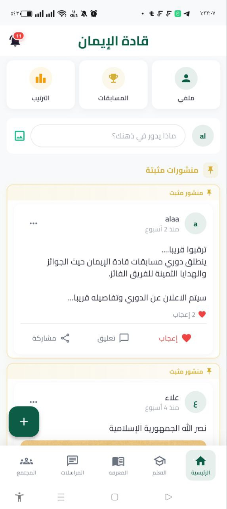
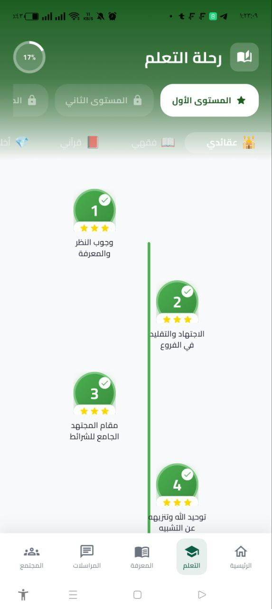
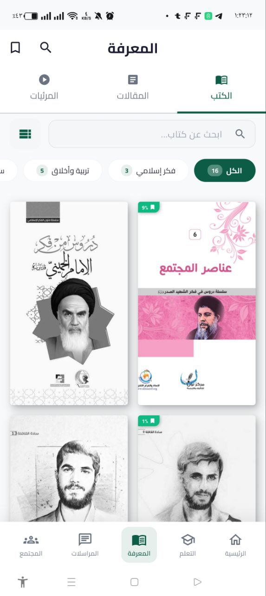
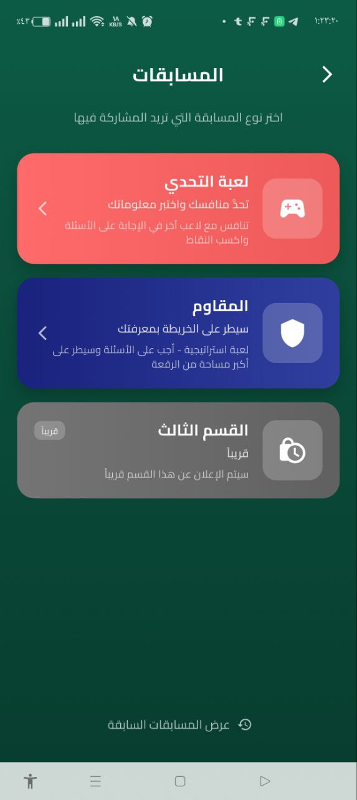
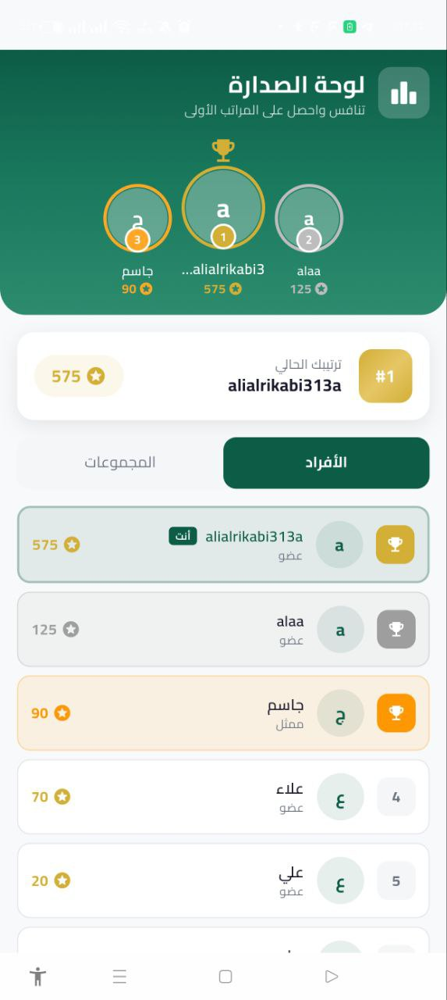

منصّة مجتمعية على Flutter وFirebase تجمع ثلاثة عوالم في تطبيق واحد: تواصل لحظي (محادثات ومجموعات)، تعليم تفاعلي بمسارات وكتب، ومسابقات وألعاب معرفية بلوحات صدارة — منشورة على Google Play لمجتمع «قادة الإيمان». A community platform on Flutter & Firebase that fuses three worlds in one app: real-time communication (chat & groups), interactive learning with paths and a library, and knowledge competitions & games with leaderboards — published on Google Play for the "Qādat al-Īmān" community.
زاد ليس تطبيقاً واحداً، بل ثلاثة أنظمة في واحد: شبكة تواصل اجتماعي، ومنصّة تعليمية متدرّجة، ومحرّك مسابقات وتلعيب — كلّها مبنيّة على Flutter وFirebase ومنشورة فعلاً على Google Play. Zaad isn't one app — it's three systems in one: a social network, a tiered education platform, and a competition/gamification engine — all built on Flutter and Firebase and actually shipped on Google Play.
التواصل: منشورات وتفاعلات لحظية، محادثات مجموعات بأسلوب واتساب (رتب إدارية، ردود، إيصالات قراءة، أنواع رسائل متعددة)، ورسائل مباشرة. التعليم: «رحلة تعلّم» بأسلوب Duolingo بخمس فئات وثلاثة مستويات متدرّجة، ومكتبة معرفة فيها كتب PDF ومرئيات ومقالات قابلة للتنزيل. المسابقات: أسئلة مؤقّتة، ألعاب تنافسية، نقاط تُجمَع، ولوحات صدارة شهرية للأفراد والمجموعات مع أوسمة. Communication: real-time posts and reactions, WhatsApp-style group chat (admin roles, replies, read receipts, multiple message types), and direct messages. Education: a Duolingo-style "learning journey" with five categories and three progressive levels, plus a knowledge library of downloadable PDFs, videos, and articles. Competitions: timed questions, competitive games, points, and monthly leaderboards for individuals and groups with badges.
الدخول مغلق على المجتمع عبر أكواد وصول فريدة (لا تسجيل عامّ)، مع تحكّم بالأدوار على خمسة مستويات. وتُدار الإشعارات عبر سبع Cloud Functions تعمل عند وقوع الأحداث (إعجاب، تعليق، رسالة، نقاط، طلب انضمام)، فتُرسلها عبر FCM وتحفظها في Firestore. Access is closed to the community via unique access codes (no public signup), with five-tier role-based access control. Notifications are driven by seven Cloud Functions triggered on events (like, comment, message, points, join request), delivered via FCM and persisted in Firestore.
لقطات حقيقية من التطبيق على المتجرReal screenshots from the app's store listing





Flutter (Clean Architecture · feature-first) فوق Firebase لحظي، مع منطق خادمي في Cloud FunctionsFlutter (clean architecture · feature-first) over real-time Firebase, with server logic in Cloud Functions
// ~14 ميزة مستقلة · Riverpod + go_router (حُرّاس مصادقة) lib/ ├─ core/ services · router · theme · widgets مشتركة └─ features/ ├─ home / social منشورات · تعليقات · ستوري (snapshots لحظية) ├─ chat_groups / dm رسائل: نص/صورة/ملف/صوت · رتب · إيصالات قراءة ├─ competitions مسابقات مؤقّتة · ألعاب · نقاط ├─ learning / courses 5 فئات × 3 مستويات · تتبّع تقدّم ├─ library PDF · فيديو · مقالات · تنزيل └─ leaderboard · profile · tasks · notifications · auth Firebase: Firestore 13+ مجموعة · فهارس مُحسّنة · قواعد أمان صارمة (RBAC) Cloud Functions 7 triggers → FCM + حفظ الإشعار في Firestore Storage صور · PDF · فيديو Auth أكواد وصول مغلقة
مجموعات بأسلوب واتساب: ردود على الرسائل، إيصالات قراءة، حذف ناعم، أنواع رسائل (نص/صورة/ملف/صوت/فيديو)، تحكّم إداري، وطلبات انضمام — إضافةً إلى رسائل مباشرة 1:1.WhatsApp-style groups: message replies, read receipts, soft delete, message types (text/image/file/audio/video), admin controls, and join requests — plus 1:1 direct messages.
أسئلة مؤقّتة (40 ثانية) بتسجيل نقاط لحظي وردود فعل متحرّكة، ألعاب تنافسية، نظام نقاط مزدوج (عامّة دائمة + ترتيبية شهرية)، أوسمة، ولوحات صدارة للأفراد والمجموعات.Timed questions (40s) with live scoring and animated feedback, competitive games, a dual points system (permanent global + monthly ranking), badges, and individual/group leaderboards.
«رحلة تعلّم» بأسلوب Duolingo: خمس فئات × ثلاثة مستويات بعُقد تقدّم مرئية وفتح متسلسل للدروس، مع حفظ تقدّم كل مستخدم.A Duolingo-style "learning journey": five categories × three levels with visual progress nodes and sequential lesson unlocking, persisting each user's progress.
كتب PDF (عارضان للتوافق)، مقاطع فيديو ومرئيات YouTube بمشغّل مخصّص، ومقالات — مع بحث وتنزيل للقراءة دون اتصال.PDF books (dual viewers for compatibility), videos and YouTube content with a custom player, and articles — with search and download for offline reading.
7 دوال تعمل عند حدوث أيّ نشاط فتبثّ الإشعارات بكتابات دفعية وتحفظها في Firestore ليعتمد عليها مركز إشعارات داخلي موثوق، مع قنوات أندرويد منفصلة (رسائل/مهام/عام).7 functions triggered on activity, broadcasting notifications via batch writes and persisting them in Firestore for a reliable in-app center, with separate Android channels (messages/tasks/general).
دخول عبر أكواد وصول فريدة (لا تسجيل عامّ) مع تحكّم بالأدوار على خمسة مستويات، مُطبَّق في قواعد Firestore وفي الواجهة معاً — مع حماية لقطات الشاشة للشاشات الحسّاسة.Sign-in via unique access codes (no public signup) with five-tier role-based access control, enforced in both Firestore rules and the client — plus screenshot protection on sensitive screens.
| الإطارFramework | Flutter 3.9+ · Dart 3.9 · Material 3· Material 3 |
| إدارة الحالةState | Riverpod (+ code-gen) · freezed · json_serializable· freezed · json_serializable |
| التنقّلNavigation | go_router مع حُرّاس مصادقة · ~82 شاشةwith auth guards · ~82 screens |
| الخادمBackend | Firebase: Cloud Firestore · Cloud Functions (7) · Storage · FCM · Auth |
| اللحظية والبياناتReal-time & data | Firestore snapshots · فهارس مُحسّنة · ترقيم · قواعد أمان RBACFirestore snapshots · optimized indexes · pagination · RBAC rules |
| الوسائطMedia | video_player · chewie · flutter_pdfview · pdfx · audioplayers · image_cropper |
| الواجهةUI | Cairo (خط عربي) · flutter_animate · lottie · shimmer · cached_network_imageCairo (Arabic font) · flutter_animate · lottie · shimmer · cached_network_image |
| المنصّاتPlatforms | أندرويد (موقّع ومنشور) · iOS · ويب · WindowsAndroid (signed & published) · iOS · Web · Windows |